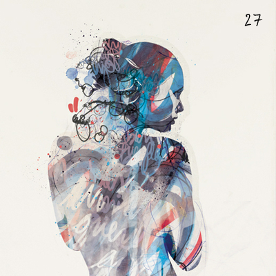

Interactive record. Each ring of grooves is a song. Press Enter to focus it and Escape to leave. Use the arrow keys to move between songs, and Enter to play one.
No.027
Twentyseventh
It’s been a while since I did a doubleheader. So there you have it, fourteen instead of the usual seven. For an exceptional week, and everything else that goes with it.
Also on YouTube
Tracklist
Running order
14 songs
Take it home
The inlay card
Print it, cut it out, and fold it into a cassette case. You can also copy the tracklist and rebuild the mix wherever you listen.
Side A
- Tidal Wave Longwave
- Beautiful Life JJ
- Abraham’s Daughter Arcade Fire
- Guilty As Charged Chairlift
- Bright Night Dntel
- The Heron and the Fox Little Scream
- Don’t Be Afraid, You Have Just Got Your Eyes Closed Múm
Side B
- Idea Of Happiness Van She
- The Time We Lost Our Way (featuring Loulou) Thievery Corporation
- Spore Ramona Falls
- Flutes Hot Chip
- A Few Empty Waves Cats On Fire
- Brains Lower Dens
- Welcome Home Radical Face
Twentyseventh
No.027
Twentyseventh
April 2012
Monday Music Mix
A / B · 14 songs
Album art featuring work by Raphël Vicenzi
Archive